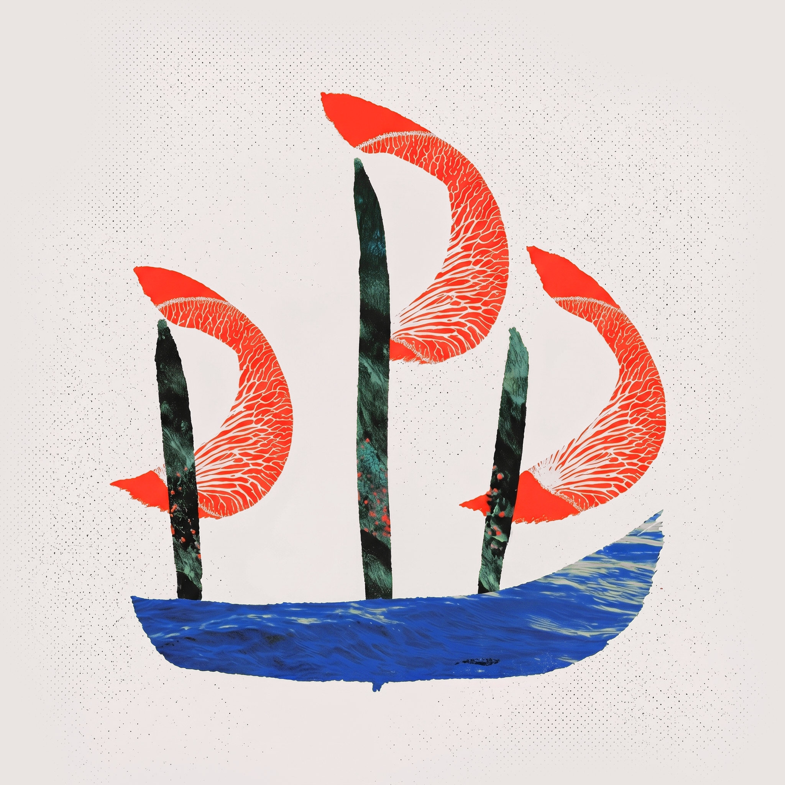
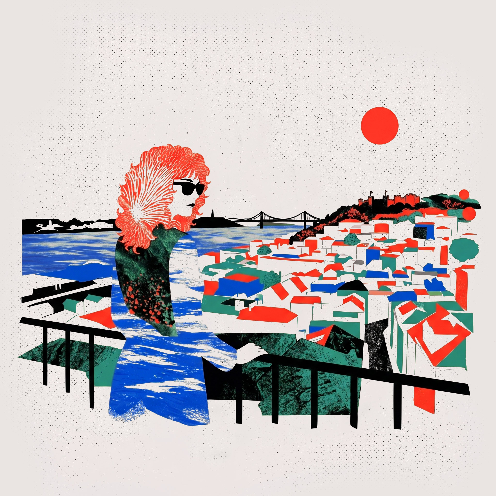
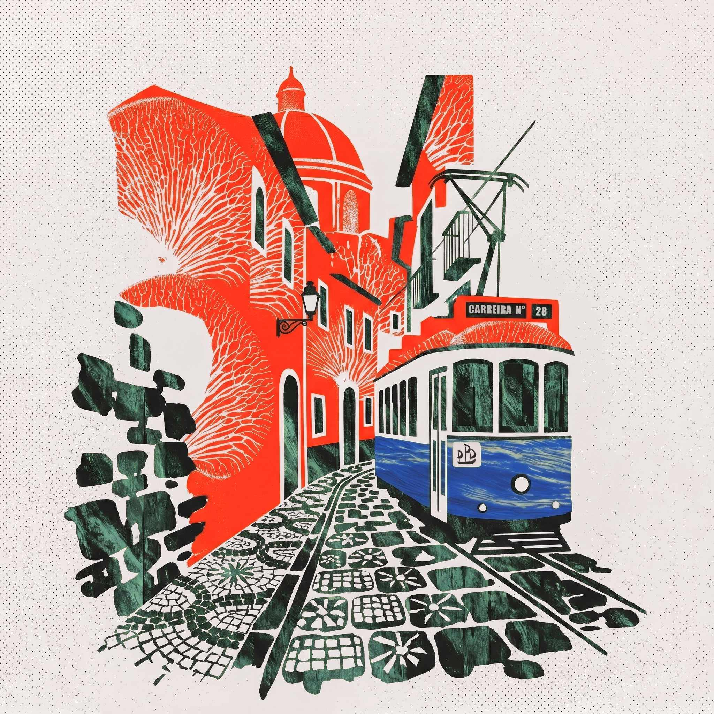

A different way to experience a city.
Not by seeing more —
but by noticing more.

Carefully guided walks that reveal the invisible layers of the city — helping you notice what almost everyone else walks past.
Explore the Lisbon CompanionExtend the feeling of care, continuity, and attention beyond your doors — without increasing operational complexity.
Learn how it worksA carefully crafted editorial experience designed to accompany your clients during independent exploration — without guides, additional logistics, or operational burden.
Explore partnership opportunitiesWhen we travel, we constantly move from one place to another.
We follow maps.
We check recommendations.
We try not to miss anything.
But once we arrive, something often feels absent.
Very few people actually show us how to look at what we are seeing.
That is where Deeply Slow Travel begins.
Each experience is designed to be lived while walking — accessible through a simple link, with no app download required.
You arrive at a square.
The experience invites you to pause and notice the rhythm of the place.
Slowly, a hidden layer of history begins to emerge beneath the ordinary.
You look again. And the place changes.
That is what we call The Invisible Layer™.
See a live exampleDeeply Slow Travel began with years of walking through Lisbon without hurrying.
Not collecting attractions.
Not trying to "cover" the city.
Just paying attention.
Certain places kept revealing themselves slowly — through light, rhythm, silence, repetition, and small details most people passed without noticing.

Over time, I realised that what I was searching for in travel was not more information.
It was a different quality of attention.
Deeply Slow Travel grew from that idea.
The project combines walking, editorial storytelling, sensory observation, and historical research to create experiences that help travellers experience cities more deeply — and more personally.
Every route is designed slowly, on foot, through repeated observation of how places feel, change, sound, and reveal themselves over time.
Because meaningful travel rarely comes from seeing more.
It comes from learning how to notice differently.
Alessandra Velho
Founder & Creative Director, Deeply Slow Travel
Each walk follows the same carefully designed sequence — a dramaturgy of attention.
The experience begins with atmosphere, rhythm, and bodily perception. The traveller feels the place first. Interpretation comes afterwards.
A hidden or overlooked element completely reframes the place.
This is the heart
of The Invisible Layer™ — the moment most people walk past without ever noticing.
A simple act of attention: pause, compare, notice, listen, look again.
The
traveller stops being a passive observer of the city and begins participating in it.
A private space for reflections and personal discoveries.
Within 24 hours,
each traveller receives a digital archive of the moments saved throughout the walk — delivered quietly, as a lasting memory.
Most people move through a city seeing only what is visible.
The Invisible Layer™ reveals what usually remains hidden — the history beneath the pavement, the details most people overlook, the rhythms that only emerge when someone slows down enough to notice them.
It is not more information.
It is a different quality of attention.
See it in practiceThe experience naturally adapts to different ways of moving through the city.
The same walk may be experienced through audio, short-form reading, or small observation prompts.
Couples walking together. Urban noise. People who prefer listening. Others who prefer reading.
The editorial core always remains the same. Only the format changes.
What follows is a real moment from the Lisbon Companion — experienced exactly as it would unfold during the walk.
You are standing in one of the busiest squares in the city. Taxis cutting across traffic. Tuk-tuks weaving through narrow gaps. Tour groups following coloured flags.
Do not move yet.
Stand still for a minute.
Let the movement happen around you. Notice the rhythm of the square — not the noise itself, but the pattern beneath it. The way people cross without looking. The strangely choreographed movement of the pigeons.
When you feel that rhythm, continue.
Under your feet once stood Lisbon's largest medieval hospital — the Hospital Real de Todos os Santos. Built in the fifteenth century, it contained cloisters, wards, chapels, and gardens. For centuries, it was one of Europe's most advanced medical institutions.
On the morning of 1 November 1755 — All Saints' Day — an earthquake struck Lisbon. The fires that followed lasted five days.
The hospital disappeared completely.
Today there is no plaque. No visible ruin. No obvious sign of what once existed here.
The city was rebuilt over it.
And the square became simply another square.
For almost everyone.
The stone beneath your feet was laid over ash, rubble, and centuries of invisible history.
The people crossing this square right now have no idea what once stood here.
And yet, somehow, it is all still present.
Stay with that thought for a few moments before moving on.
In the Lisbon Companion, this is where you write — not a review or a caption, but a personal impression.
A sentence. A word. Whatever surfaces.
Throughout the walk, these reflections are quietly saved.
Within 24 hours, you receive a personal archive containing everything you noticed along the way.
Not a receipt. Not a survey.
A memory.
Seven rhythms. Seven neighbourhoods. One different way of experiencing Lisbon.
Explore the Lisbon Companion Work with usOur first experience — and the project's proof of concept.
A curated series of walks across Lisbon, structured around seven distinct rhythms of the city.

Lisbon does not move in a single rhythm. Each neighbourhood asks for a different form of attention.
Baixa · Chiado · Bairro Alto · Príncipe Real
Where everything begins. The texture of the pavement, the changing light, the movement of the squares, the sensation of a city built upon many others.
Alfama · Graça · Mouraria
The oldest part of the city. Medieval alleyways, Moorish walls, streets that still carry centuries within them.
Intendente · Anjos · Arroios
A Lisbon in transition — where new voices exist alongside much older stories.
Santos · Alcântara · Belém
The city opens towards the river. Time slows. The Tagus becomes more than a backdrop.
Lapa · Estrela · Campo de Ourique
A quieter Lisbon made of residential streets, trees, and small gestures that almost go unnoticed.
Tapada das Necessidades · Ajuda · Monsanto
Green spaces, memory, breathing. For those who prefer to feel the city rather than simply see it.
Marvila · Beato · Xabregas
A changing Lisbon — rewarding those who arrive without fixed expectations.
Two audiences. One vision of travel.
We work with both boutique hotels and luxury travel agencies — each on their own terms, each with their own needs.
Extend the guest experience beyond the hotel itself.
The moment guests begin exploring independently, most hospitality brands disappear from the experience.
Deeply Slow Travel allows that presence to continue — through carefully guided moments of attention, discovery, and memory.
No app downloads. No operational complexity. No additional staffing.
Simply a carefully designed experience that accompanies guests through the city.
As guests leave to explore Lisbon, they receive a small printed card with a QR code and a short invitation:
"Lisbon reveals itself slowly. This journey begins just beyond these doors."
A member of staff introduces the experience in less than 30 seconds.
Guests leave with the route already open, the first moment already activated, and the experience already in motion.
That is everything your team needs to do.
We can tailor the client interaction to suit your hotel's culture and operational systems.
This is not a traditional city guide.
The experience is designed as a dramaturgy of attention — combining atmosphere, hidden detail, observation, and reflection.
A square reveals a forgotten history. A street gains emotional depth. A walk becomes a memory that continues long after the journey ends.
Within 24 hours, guests receive a personal archive of their discoveries and reflections — delivered quietly under your hotel's name.
Not a survey. A memory.
Every stop in the Lisbon Companion follows the same structure. Your guests will experience:
The experience never begins with information. It begins with atmosphere, rhythm, and bodily perception. Your guests arrive before they understand.
A hidden element reframes the place entirely. This is the heart of The Invisible Layer™ — something most people walk past without noticing.
A simple act of attention: pause, compare, notice, listen. Your guests stop being passive observers and become participants in the city.
A private space for reflections. Within 24 hours, guests receive a digital archive of everything they noticed — delivered quietly under your name.
The experience does not end when guests return to the hotel.
Within 24 hours, each guest receives a personal archive of their discoveries and reflections — every observation they saved, every moment they noticed, every thought they recorded during the walk.
This archive is delivered quietly under your hotel's name.
It is not a survey. It is not operational data. It is a memory — a tangible trace of a deeper experience of the city that your brand enabled.
It is the only post-journey touchpoint your guests will receive, and it arrives as a gift, not a prompt.
Lisbon does not move in a single rhythm. Each neighbourhood asks for a different form of attention. Your guests will have access to seven distinct ways of experiencing the city — each designed around a different neighbourhood and a different quality of attention.
Baixa · Chiado · Bairro Alto · Príncipe Real
Where everything begins. The texture of the pavement, the changing light, the movement of the squares, the sensation of a city built upon many others.
Alfama · Graça · Mouraria
The oldest part of the city. Medieval alleyways, Moorish walls, streets that still carry centuries within them.
Intendente · Anjos · Arroios
A Lisbon in transition — where new voices exist alongside much older stories.
Santos · Alcântara · Belém
The city opens towards the river. Time slows. The Tagus becomes more than a backdrop.
Lapa · Estrela · Campo de Ourique
A quieter Lisbon made of residential streets, trees, and small gestures that almost go unnoticed.
Tapada das Necessidades · Ajuda · Monsanto
Green spaces, memory, breathing. For those who prefer to feel the city rather than simply see it.
Marvila · Beato · Xabregas
A changing Lisbon — rewarding those who arrive without fixed expectations.
We collaborate with a carefully selected number of hospitality partners who share a similar vision of what meaningful travel can be.
If that feels aligned with your hotel, we would be glad to start a conversation.
Get in touchExtend the client experience beyond the itinerary.
Every carefully planned itinerary contains unstructured moments — a free afternoon, an evening without a guide, time between experiences.
Most agencies fill these gaps with restaurant recommendations or attractions to visit independently.
Deeply Slow Travel fills them with something more meaningful — a curated editorial experience that accompanies your clients during independent exploration.
Your clients experience Lisbon at a depth most travellers never reach. They return with memories, not just impressions. And they associate that depth with your agency — not with a generic app or travel guide.
It requires no additional logistics. No guides. No operational complexity. Just a carefully designed experience your clients carry with them through the city.
At the right moment in your client's journey — whether that is at arrival, during a planning meeting, or before independent exploration — your team provides access to the experience with a brief explanation of how it works.
Clients are then free to begin whenever they choose, and to move through the experience at their own pace.
Because every agency operates differently, we customise the client interaction to match your processes and your way of working with clients.
This is not a traditional city guide.
The experience is structured as a dramaturgy of attention — combining atmosphere, hidden detail, observation, and reflection.
A square becomes layered with invisible history. A street becomes emotionally memorable. An afternoon becomes something clients continue thinking about after they return home.
Within 24 hours, clients receive a personal digital archive of their reflections and discoveries — delivered quietly under your agency's name.
Not a survey. A memory.
Lisbon does not move in a single rhythm. Each neighbourhood asks for a different form of attention. Your clients will have access to seven distinct ways of experiencing the city — each designed around a different neighbourhood and a different quality of attention.
Baixa · Chiado · Bairro Alto · Príncipe Real
Where everything begins. The texture of the pavement, the changing light, the movement of the squares, the sensation of a city built upon many others.
Alfama · Graça · Mouraria
The oldest part of the city. Medieval alleyways, Moorish walls, streets that still carry centuries within them.
Intendente · Anjos · Arroios
A Lisbon in transition — where new voices exist alongside much older stories.
Santos · Alcântara · Belém
The city opens towards the river. Time slows. The Tagus becomes more than a backdrop.
Lapa · Estrela · Campo de Ourique
A quieter Lisbon made of residential streets, trees, and small gestures that almost go unnoticed.
Tapada das Necessidades · Ajuda · Monsanto
Green spaces, memory, breathing. For those who prefer to feel the city rather than simply see it.
Marvila · Beato · Xabregas
A changing Lisbon — rewarding those who arrive without fixed expectations.
We collaborate with a carefully selected number of travel agencies who share a similar vision of what meaningful travel can be.
If that feels aligned with your agency, we would be glad to start a conversation.
Get in touch